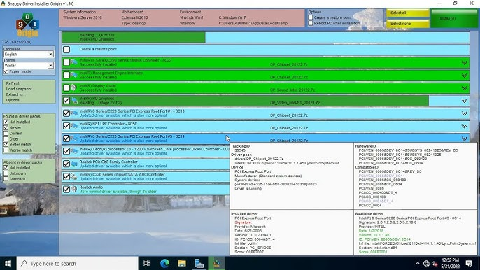

Présentation de l'entreprise
Micro d'clic est un magasin d'informatique situé à Condrieu, au 8 Rue de l'Industrie, Espace Les Chaillées. Fondée en mai 2009, c'est une société qui propose une gamme complète de services informatiques destinés aux particuliers, professionnels, associations et collectivités.

Développement :
Travaux Réalisé :
- Nettoyage de poste informatique
- Mise à jour de version/Windows
- Remplacement de disqur dur (hdd à ssd)
- Remplacement de barette de ram
Mission 1: Changer les barrettes RAM d'une tour
Après demande d'un client pour améliorer les capacités de son ordinateur. Il a fallu changer les barrettes de RAM (la capacité de celle-ci)
J'ai donc pris la tour, pour la poser sur le bureau et l'ouvrir.
J'ai pris un tournevis afin de dévissé les barrettes.
Je les ai ensuites délicatement enlevés afin d'insérer les nouvelles à la place.
Enfin, j'ai révisé les barrettes, refermé la tour, et l'ai reposée par terre.
Mission 2: Changer un disque dur et transfer des données
Après examination du problème de lenteur venant d'un ordinateur portable d'un client, Il y a eu décision de changer le disque dur.
En premier temps, on à retirer l'ancien disque dur. Une fois retirer, il y a eu un (long) processus d'attente pour la copie des donné d'un disque à l'autre(1h30-2h)
Après la copie, on récupère le nouveau disque, on le branche dans l'ordinateur, on vérifie que tout fonctionne, et seulement à la fin on referme tout.
Tâche réalisé avec l'aide des dirigeants du magasin
Pour des changement de windows ou des nouveaux ordinateurs, ont prenait une clé et ont installais souvent w10 ou w11.
Pour des ordinateur lent, on se servait du logiciel "SDIO" ou Snappy Driver Installer Origin, afin de mettre à jour différents drivers
Une fois les drivers à jours, une clé usb contenant plusieurs logiciel de nettoyage était utilisé.
Enfin, une fois tout cela réalisé, une dernière vérification était faite avant de rendre/donner l'ordinateur au client.
Tâche réalisé avec l'aide des dirigeants du magasin
Bilan :
Compétence acquise :
- Apprendre à réparer ou changer différent composant informatique
- Savoir nettoyer correctement du matériel informatique